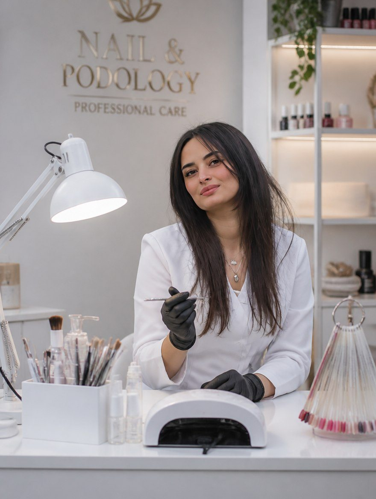

Hands and feet carry us through every day and ask for almost nothing in return. Maria built her studio on a quiet conviction that they deserve the same considered, professional attention as any other part of the body — and that the person attached to them deserves to feel genuinely cared for while it happens.
She didn't come to this work for the polish. She came for the part most people overlook: the relief of a problem finally solved, the ease of a foot that no longer hurts, the small dignity of being looked after by someone who is actually paying attention. Thirteen years in, she still measures a session by how you feel when you leave — not by how quickly the chair turns over.


Health before beauty
Her approach is simple to say and harder to practise: health before beauty. Beautiful nails are not the goal; they are what naturally follows when the nail is healthy, the cuticle is respected, and skin is treated rather than disguised. Maria would genuinely rather tell you the truth — that your nails need a season of rest — than sell you a colour that hides the problem for three weeks. It makes for slightly awkward small talk and considerably healthier nails.
A student, on purpose, for life
That conviction keeps her studying. Every single year she trains with new masters and goes deeper into anatomy, podology, the biomechanics of the foot, nail conditions and diabetic foot care. She believes a real professional never quite graduates — and she has the faintly inconvenient habit of finding clinical papers genuinely interesting. One day she intends to continue her medical education, and eventually to teach podology and mentor the specialists who come after her.
A room without judgment
Many people quietly hide their feet — because of pain, embarrassment, a nail condition, or one bad experience they would rather not repeat. In Maria's studio there is no judgment. Only understanding. It is a calm, private, immaculately clean space built for one client at a time, where nothing is rushed and every detail is deliberate. You are not an appointment to be processed; you are a person being looked after.
What luxury actually means
To Maria, luxury has nothing to do with marble or gold. It is feeling safe. Being listened to. Flawless hygiene. Honesty, kindness, and the unhurried attention that quietly tells you you're in good hands — quite literally. No glitter, no noise. Just the calm confidence of work done properly.
I treat your hands and feet with the same attention and care I would give my own family.
More than a service
Maria isn't simply performing treatments. She educates, listens, observes, explains, and builds solutions that last instead of quick fixes that don't. She is — by her own cheerful admission — almost unreasonably particular about order, cleanliness and a perfectly shaped edge. She is building a lifelong profession, not offering a quick beauty fix. And she would quietly like your nails to outlast the trend that inspired them.
That is the whole idea behind Unguis House: a place where health, craft and genuine care meet, so you can simply feel comfortable in your own body. Healthy nails. Healthy feet. Quiet, lasting confidence.